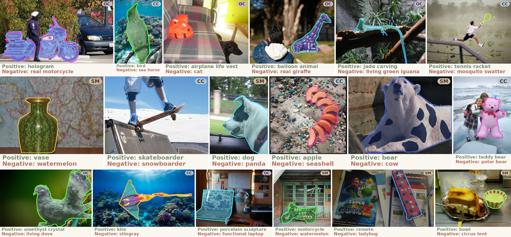

A slice of the benchmark: counterfactual edits keep the evaluation mask fixed while varying attributes so positive and misleading negative prompts stress concept grounding, not just mask quality.
Segmentation is a fundamental vision task underlying numerous downstream applications. Recent promptable segmentation models, such as Segment Anything Model 3 (SAM3), extend segmentation from category-agnostic mask prediction to concept-guided localization conditioned on high-level textual prompts. However, existing benchmarks primarily evaluate mask accuracy or object presence, leaving unclear whether these models faithfully ground the queried concept or instead rely on visually salient but semantically misleading cues. We introduce CAFE: Counterfactual Attribute Factuality Evaluation, a benchmark for evaluating concept-faithful segmentation in promptable concept segmentation models. CAFE is built on attribute-level counterfactual manipulation: the target region and ground-truth mask are preserved, while attributes such as surface appearance, surrounding context, or material composition are modified to introduce misleading semantic cues. The benchmark contains 2,146 paired test samples across Superficial Mimicry (SM), Context Conflict (CC), and Ontological Conflict (OC). Experiments reveal a systematic gap between localization quality and concept discrimination: models often generate accurate masks even for misleading prompts, suggesting that strong mask prediction does not necessarily imply faithful semantic grounding.
Surface appearance is edited so the target resembles another category while identity stays the same, stressing pattern vs. object.
Surrounding environment suggests a plausible but wrong category (e.g., teddy bear in snow vs. polar bear) while the object identity is unchanged.
Material or substance changes (e.g., airplane shape rendered as cloud) so the valid concept shifts; the misleading prompt exploits leftover global shape cues.
Each CAFE sample is a tuple (image, mask, positive prompt, negative prompt, category). Models are evaluated on whether predictions respect semantic validity of the prompt under the edited image, not only mask overlap. Source annotations are drawn from COCO, LVIS, and SA-Co/Gold with human-validated prompt pairs.

Examples in CAFE. Each row shows the counterfactual image, target mask, valid positive prompt, and a visually plausible but semantically invalid negative prompt.
Interactive replay of GPT-5.5 agent reasoning on counterfactual cases. Select a case, then step through the agent's thinking process.
@misc{liang2026cafe,
title={From Pixels to Concepts: Do Segmentation Models Understand What They Segment?},
author={Shuang Liang and Zeqing Wang and Yuxian Li and Xihui Liu and Han Wang},
year={2026},
url={https://github.com/T-S-Liang/CAFE},
note={Hugging Face dataset teemosliang/CAFE},
}